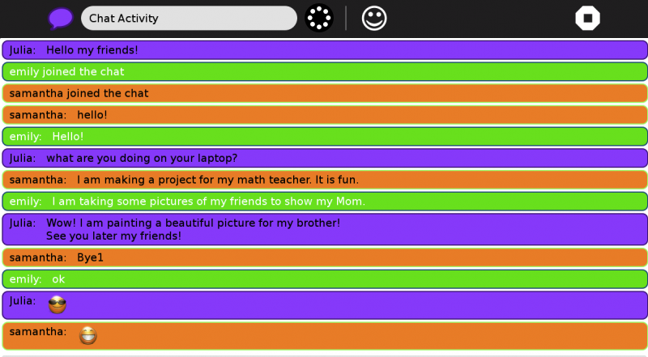
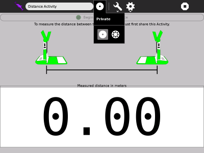
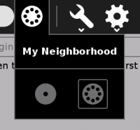
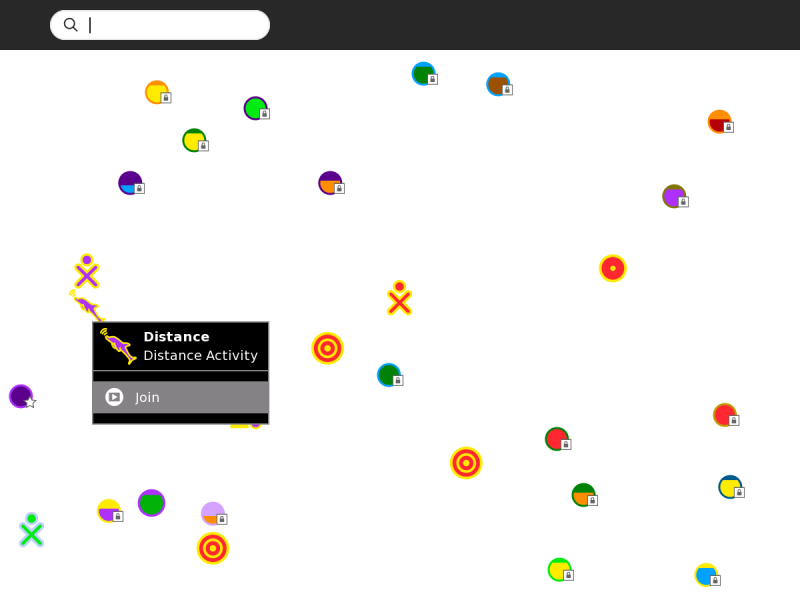

Collaborating¶
About Collaborating¶
One of the most important features of Sugar is the ability for you to collaborate, or network, and share a project that you are working on with others. This can take the form of multiple cursors in a document, multiple musical instruments, two players in a game, multiple uses in chat, and so on. Many Activities support collaboration, see below, Where to get Collaborating.
This image is from the Activity toolbar of Write, which is an Activity which supports collaboration.
The highlighted button is the collaboration, or sharing, “switch”. The options are
Home icon, which, when you hover the cursor over, reveals “Private”. This is the non-sharing option, with no networking.
Neighborhood icon, which, when you hover the cursor over, reveals “My Neighborhood”. This is the sharing option, that is, networked.
In some activities, the collaboration button is grayed (disable), that means the activity can’t collaborate.
Chatting in Chat¶
An example of collaboration, or networking, is chatting. Chatting is available in the Sugar Activity Chat.

Collaboration in Distance Activity¶
If you want to share with one of your friends, inside the Activity that you want share, click on the “Home” icon that says “Private” then click on the “Neighborhood” icon, like below.


This will make it available to all other persons connected to your same Ad-hock network. An icon of the Activity you are sharing will appear in the Neighborhood view inviting others to join. To join, all they will need to do is hover over the icon of the Activity you are sharing and click join. (This is also how you join the work of others when they share with you).

Where to get Collaborating¶
Collaborating is a built-in function in the following Activities:
Browse
Calculate
Chat
Distance
Etoys
Image Viewer (not marked Favorite)
Implode
Maze
Memorize
Pippy
Read
Record
Speak
TamTamMini
TamTamJam
Turtle Art
Write
Note
Not all Activities are able to collaborate. There are many others available in the Sugar Labs Activities repository